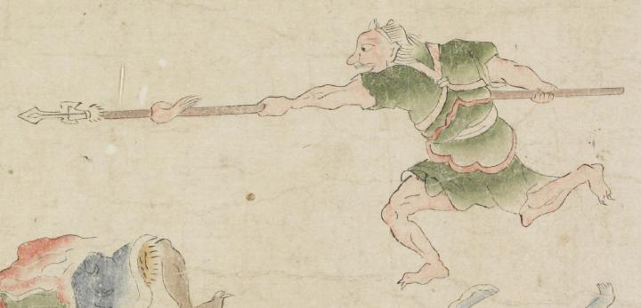

赤い肌の鬼。頭頂部に角が生えているように見える。目玉と鼻が大きい。足指の爪が鋭い。緑色の着物をまとい、赤い襷を掛けている。左側に向って走り、両腕で持った矛を前方に突き出している。
著作者：坂本弥一郎徳定／出典：親書誌：U426_nichibunken_0080：伊吹山酒呑童子絵巻；イブキヤマシュテンドウジエマキ／日付：2007／資源識別子：U426_nichibunken_0080_0014_0005
Copyright (c)2010- International Research Center for Japanese Studies, Kyoto, Japan. All rights reserved.